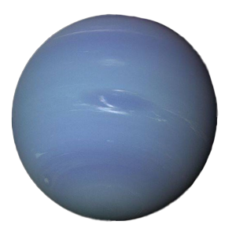

Conhecendo os planetas
Planetas |
Composição |
Temperatura variável |
Distância variável do Sol |
Imagens |
|---|---|---|---|---|
| Mercúrio | Vales de lava e grandes crateras, atmosfera quase inexistente, composta por gases como: hélio, sódio e oxígênio |
Cerca de 427°C (800°F) durante o dia e -173°C (-280°F) à noite. | A média é de cerca de 57,9 milhões de km quando está perto e cerca de 103,5 milhões de km quando está mais distante | |
| Vênus | Rochas basálticas e outras formações atmosfera Dióxido de Carbono, dióxido de enxofre,ácido sulfúricoe e Nitrogênio | Cerca de 467°C (872°F) durante o dia e -173°C (-280°F) à noite. | A média é de cerca de 108 milhões de km. quando está perto, fica a cerca de 107 milhões de km, e quando está distante, a cerca de 109 milhões de km. | |
| Terra | Crosta sólida, um manto rochoso, um núcleo líquido externo e um núcleo sólido interno, atmosfera com 78% de Nitrogênio, 21% de oxígênio outros gases e partículas | Depende da região, com variações entre cerca de 30 a 40°C (86 a 104°F), havendo registros de temperaturas abaixo de -90°C (-130°F). | A média e cerca de 149,6 milhões de km. No ponto mais próximo, fica a cerca de 147 milhões de km, e no mais distante, a cerca de 152 milhões de km. | |
| Marte | Planeta vermelho com montanhas, vales e calotas polares. Seu solo rico em óxidos de ferro dá-lhe a cor característica. A atmosfera é dominada pelo dióxido de carbono, e há evidências de água líquida no passado. | Varia de cerca de -80°C (-112°F) durante a noite a aproximadamente 20°C (68°F) durante o dia, dependendo da localização e da estação. | Cerca de 207 milhões de km quando perto, e cerca de 249 milhões de km quando longe. | |
| Júpter | Ele é tão grande, que caberiam 1300 terras dentro dele. É compostp de hidrogênio e hélio, com uma atmosfera dinâmica e traços de outros elementos. Seu núcleo é provavelmente formado por elementos mais pesados. | Cerca de -145 graus Celsius (-234ºF) na parte superior da atmosfera até vários milhares de graus Celsius (ou Fahrenheit) nas camadas mais profundas, devido à pressão extrema e interação de gases. | A média fica em cerca de 778 milhões de km. Quando está perto, fica a cerca de 741 milhões de km, e quando está distante, a cerca de 816 milhões de km. | |
| Saturno | Ele é tão grande, que caberiam 1300 terras dentro dele. É compostp de hidrogênio e hélio, com uma atmosfera dinâmica e traços de outros elementos. Seu núcleo é provavelmente formado por elementos mais pesados. | Extremamente frias na atmosfera superior, chegando a cerca de -180°C, e muito altas nas camadas mais profundas, atingindo cerca de 5.000°C devido à pressão e à compressão do hidrogênio. | Cerca de 1,4 bilhão de km. quando está perto, fica a cerca de 1,35 bilhão de km, e quando está distante, fica a aproximadamente 1,5 bilhão de km. | |
| Urano | Atmosfera de hidrogênio e hélio, seguida por uma camada de gelo composta por água, amônia e metano, e um núcleo rochoso no centro | Cerca de -224 graus Celsius a mais baixa, enquanto a temperatura mais alta, na parte superior de suas nuvens, pode chegar a -197 graus Celsius. | Cerca de 2,87 bilhões de km em sua posição média. Quando está distante, fica a aproximadamente 3,01 bilhões de km e quando está próximo fica a cerca de 2,72 bilhões de km. |  |
| Netuno | Hidrogênio (80%) e hélio (19%), com traços de metano, amônia, água e outros gases e pertículas de gelo. O metano dá a cor azulada | Na atmosfera superior, pode cair para cerca de -218°C, enquanto nas profundezas do planeta, pode chegar a até 5.400°C devido à pressão e ao calor interno. | Varia ao longo de sua órbita elíptica. quando está próximo, fica a cerca de 4,45 bilhões de km, e quando está distante, fica a cerca de 4,55 bilhões de km |